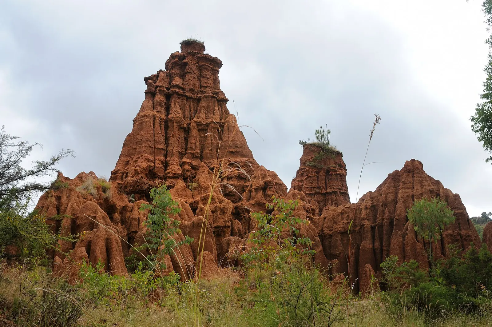

SOUTHERN ETHIOPIA · THE KONSO HIGHLANDS
Discover
Gesergiyo.
Explore a distinctive landscape in the Konso highlands and plan a respectful visit to Gesergiyo.
Read the story
01A LANDMARK OF EROSION
Why is Gesergiyo called “New York”?
Water has sculpted tall, narrow sand pinnacles in a gorge near Gesergiyo. Their skyline-like outline inspired the local nickname “New York.” This is a landform in Ethiopia, not a New York settlement.
The surrounding area is inhabited. Check current access and weather, stay on guide-approved routes, and follow community directions.
Search Gesergiyo on maps02KEEP EXPLORING